Before a task
לפני משימה
"תקרא את דף מי אני ואת דף הפורמטים בנושן, ואז תעזור לי לבנות מבנה לסרטון על [נושא]."
מדריך קצר לחיבור קלוד לנושן
אני עסק של אדם אחד. בונה אתרים, מצלם, עורך, כותב, מדבר עם לקוחות. בכל תחום כזה יש החלטות, כללים וטעויות שכבר למדתי מהן.
הבעיה הייתה שכל שיחה עם AI התחילה מאפס. מי אני, למי אני מדבר, מה כבר ניסיתי ולא עבד. הסברתי את זה שוב ושוב, ובכל פעם קצת אחרת.
אז נתתי לו ספר. נושן הוא המקום שבו כל ההגדרות שלי כתובות. קלוד מחובר אליו, קורא לפני משימה רק את הדפים שרלוונטיים לה, ובסוף כותב לשם מה שנעשה. ככה הספר גדל, ואני לא מתחיל מחדש.
MCP הוא הגשר שמאפשר לקלוד לקרוא ולכתוב בנושן. לא צריך לדעת איך הוא עובד כדי להשתמש בו.
כבר יש לכם נושן עם workspace? תדלגו לשלב 3.
באתר של נושן, Get Notion free. תכניסו מייל ותלחצו Continue, או שתירשמו עם Google, Microsoft או ChatGPT.
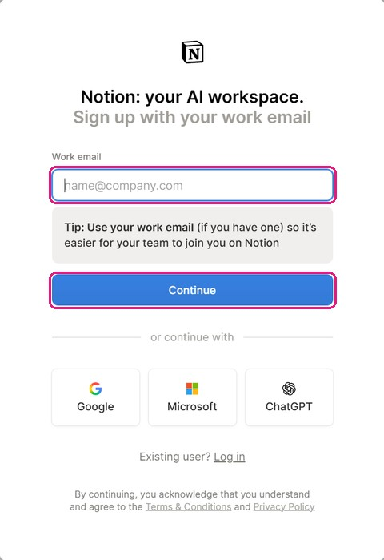
כל מה שעושים בנושן קורה בתוך workspace. השם שלו מופיע בתחתית סרגל הצד. אין לכם עדיין, או שאתם רוצים אחד נפרד רק לספר? תלחצו על השם, ואז New workspace.
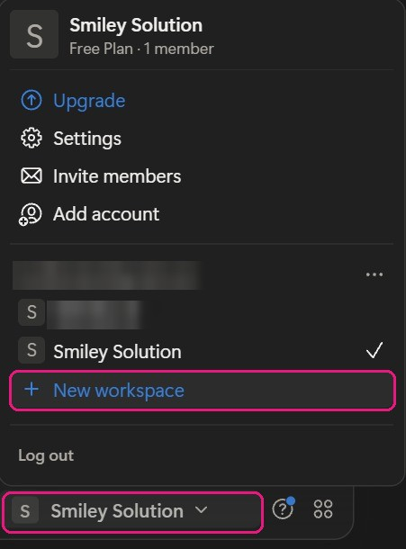
נושן ישאל What is this space for?. תבחרו מה שמתאים לכם.
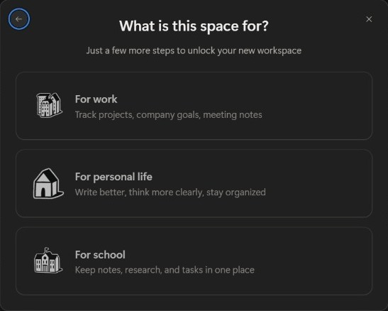
בסרגל הצד, ליד Private, תלחצו על "+" (Add a page).
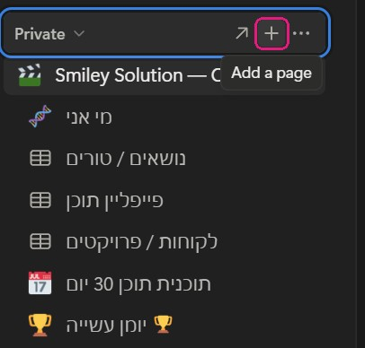
תקראו לדף "הספר שלי". זה דף האינדקס. תכתבו בו שתי שורות על מי אתם ומה אתם עושים, וכבר יהיה לקלוד מה לקרוא אחרי החיבור.
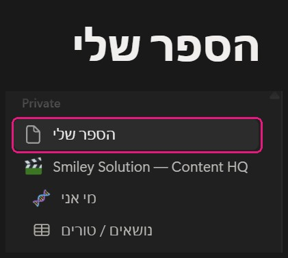
בהגדרות של קלוד, ברשימה בצד תחת Customize, תלחצו על Connectors.

תעברו ללשונית Discover ותחפשו notion. תבחרו את זה שכתוב לידו Connector · by Notion. בחיפוש יופיעו גם תוספים של אחרים עם שם דומה.
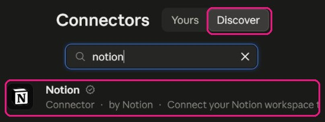
בעמוד של נושן, Connect.
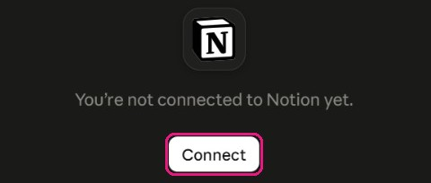
ייפתח חלון של נושן. תבחרו workspace תחת Select workspace, תקראו מה קלוד יוכל לעשות, ו-Continue.
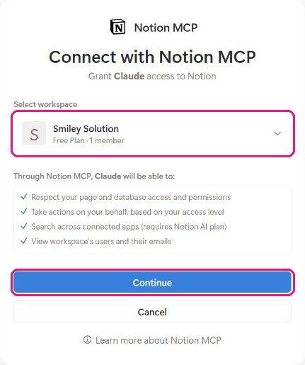
כשמופיע Connected, תחזרו לאפליקציה של קלוד.
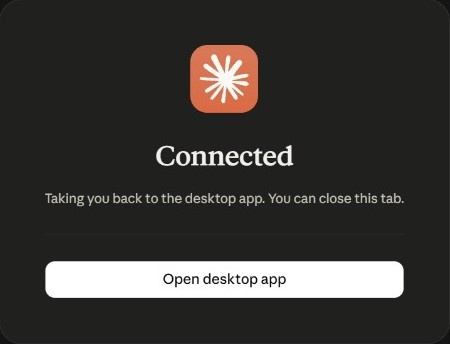
בשיחה, תלחצו על "+" למטה משמאל, תעברו ל-Connectors ותדליקו את Notion.
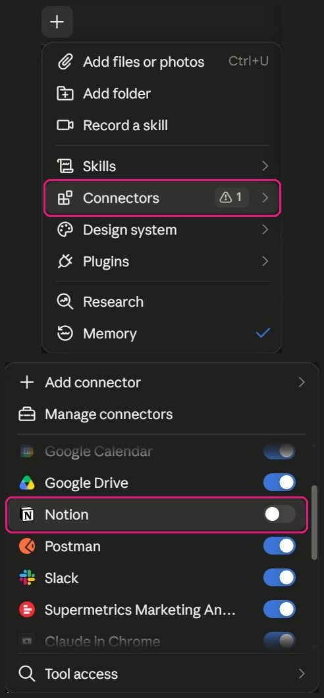
הספר לא צריך להיות מושלם. שלי התחיל מדף אחד. היום יש בו:
מעל כולם יש דף אינדקס אחד שמקשר לכל השאר. בפרויקט בקלוד כתבתי הוראה אחת: לפני כל משימה, תקרא קודם את דף האינדקס, ומשם את מה שרלוונטי.
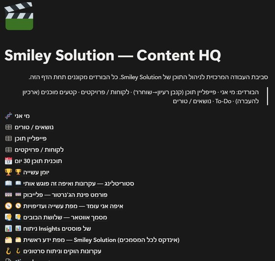
"תקרא את דף מי אני ואת דף הפורמטים בנושן, ואז תעזור לי לבנות מבנה לסרטון על [נושא]."
"תסכם מה עשינו היום בשיחה הזו, ותציע רישום ליומן העשייה בנושן. אל תכתוב עד שאני מאשר."
קלוד מקבל גישה לכל ה-workspace שחיברתם. אצלי זה בכוונה, זה הספר שלו. אם יש לכם דברים שלא תרצו שהוא ייגע בהם, תשאירו אותם ב-workspace אחר.
דבר אחד ששווה לדעת: תוכן שמגיע מבחוץ, דף שהעתקתם או תבנית שהורדתם, יכול להכיל הוראה שקלוד עלול לבצע. אז לא מכניסים לספר משהו שלא יודעים מה כתוב בו. זה אותו לקח מאירוע הסייבר שלי: לדעת מה רץ אצלכם לפני שזה רץ.
ובאותו כיוון: בחלון האישור של נושן כתוב מה קלוד יוכל לעשות, כולל לפעול בשמכם לפי ההרשאות שלכם. תקראו אותו לפני Continue.